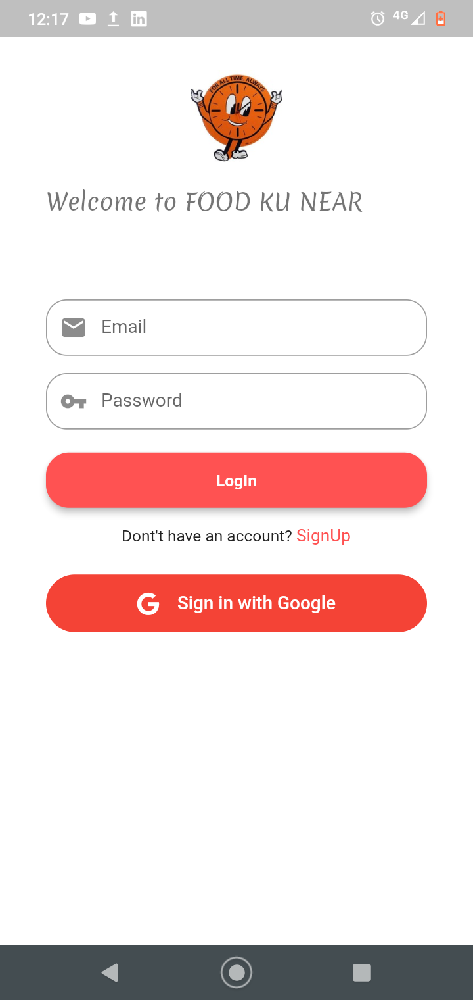
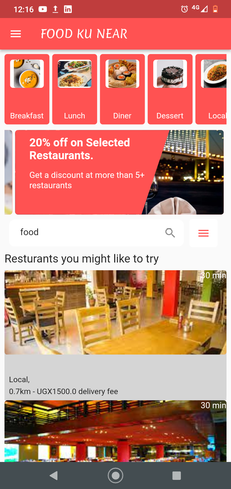
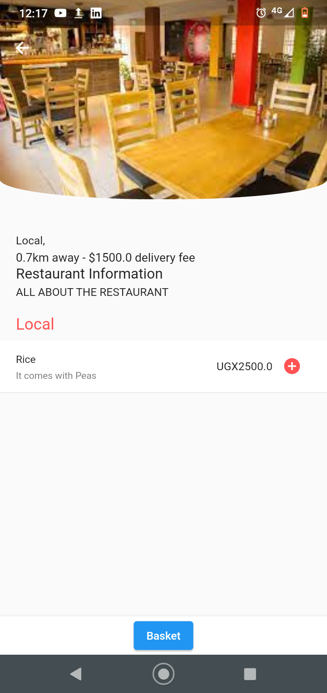
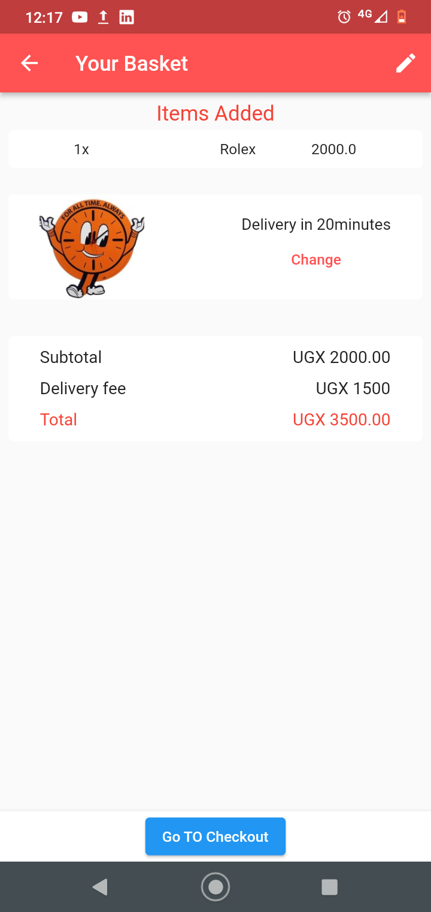

FOOD KU NEAR APP Description.
As a solution, we have built the Food Ku Near App that can help them with this issue they face. The app allows them use money that is allocated to purchasing meals and enables them plan accordingly. People are required to sign-in in order to use the app. This app provides different alternative restaurants with different kinds of dishes sold at a lower price for the students. It also enables students to be delivered to food where a QR code is scanned by the delivery personnel to ensure that the actual people who ordered for the food get it.
Project Built By:
This project was made possible by the following individuals to make the project look the way it does today.
- KEMIGABO CLAIRE || 2100713786 || 21/U/13786/EVE
- NABAGESERA HADIJAH || 2100707648 || 21/U/07648/EVE
- KATAIKE ANITA REBECCA || 2100704746 || 21/U/04746/EVE
- KAYIIRA RICHARD WILSON || 2100711717 || 21/U/11717/PS
- MUGAGGA BENJAMIN KASAGGA || 2100715419 || 21/U/15419/EVE
Functionality of the App in Order.
-

When one opens the app,they'll need to sign in or if they don't have,create an account. After one has signed up he/she can access the menus from different restaurants and the prices for specific dishes
-

After one has signed up he/she can access the menus from different restaurants and the prices for specific dishes
-

The user then decides which of the given restaurants he/she wants to get food from and can also search for them.He/she will then see the available foods sold by the given restaurant and then can select a given food's amount he/she wants.
-

The user then goes to the basket and is able to see or change the different foods he/she wants before making a payout in which he/she will be able to pay for the food.
-
Finally,the user is able to create a qr-code to verify to the delivery person that they ordered the food.
Limitations of the App.
As of now, we failed to implement the ability of the app users to get food on credit.
Due to issues with the flutter barcode scan package, we were unable to implement the ability of the app to scan the qr code generated by the app and as hence needs delivery personnel to use secondary apps to scan the qr_code.
Credits: COCIS: Mr. Paddy and Mr.Dennis